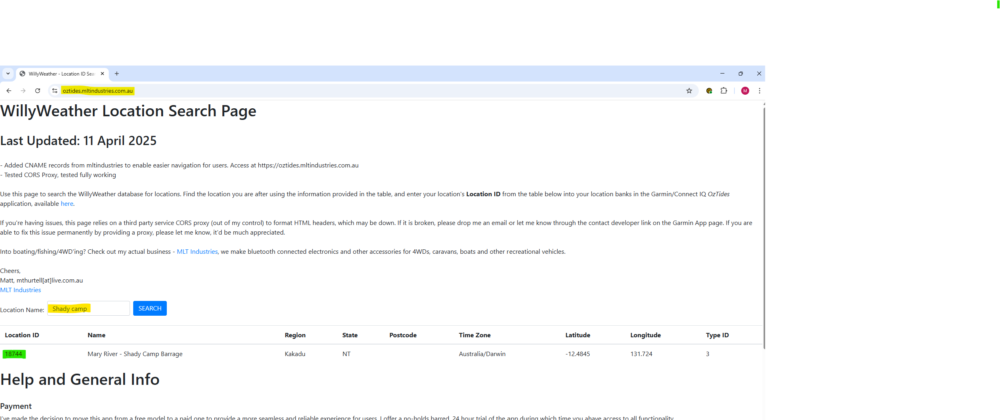
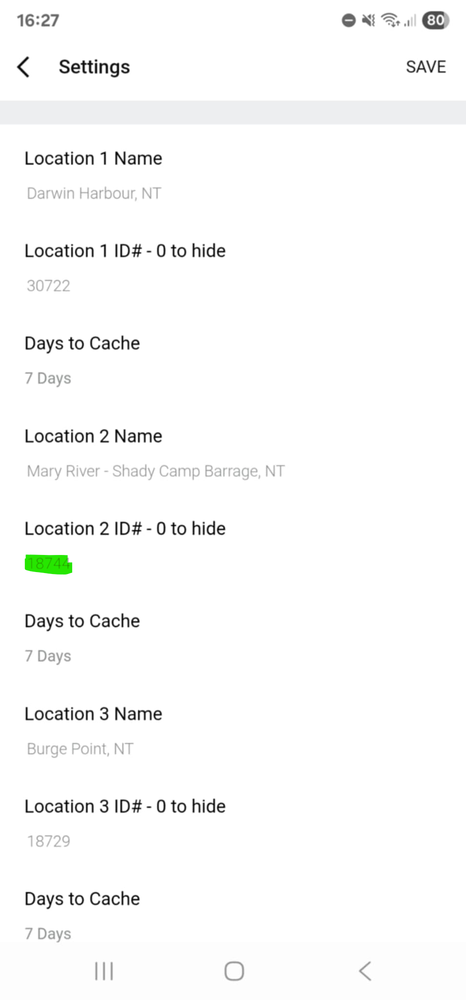
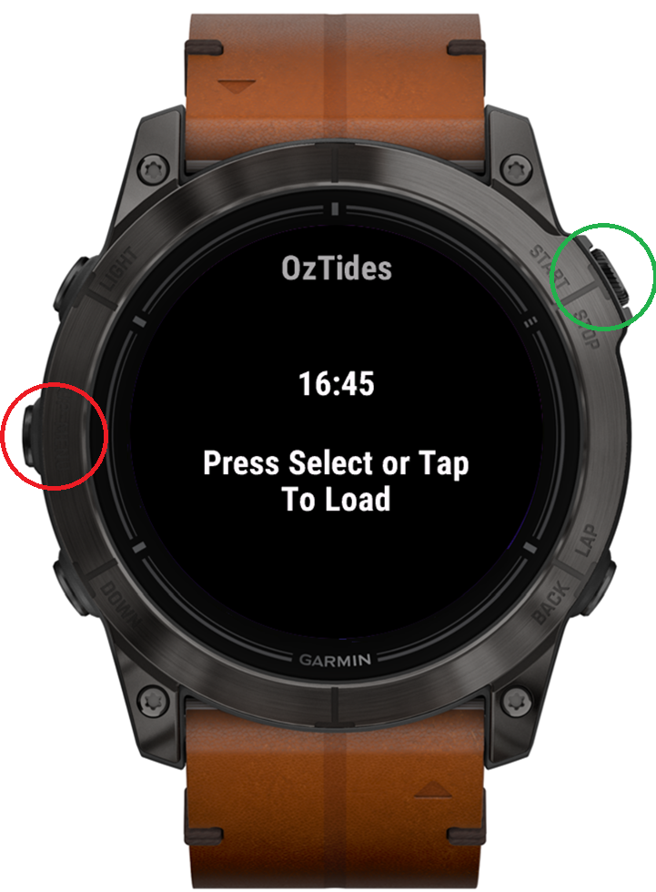
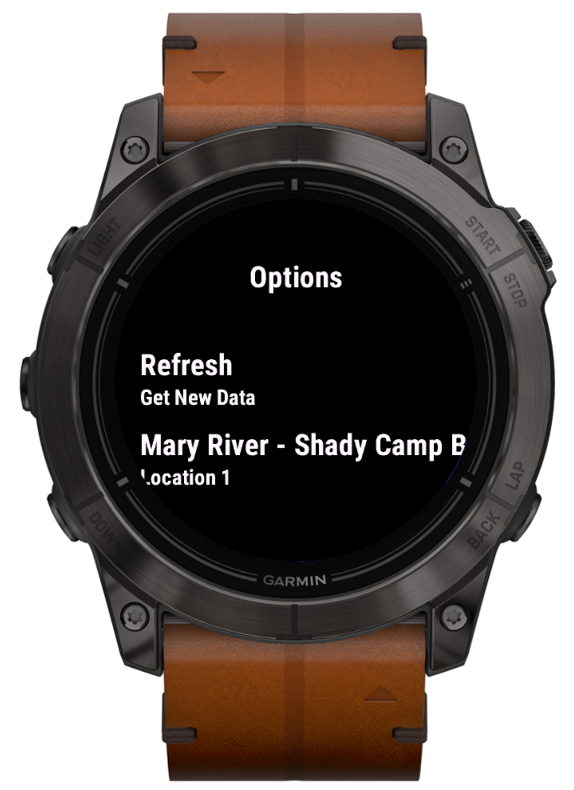

Update:
- Retired third-party CORS proxy dependency
- Moved to a locally hosted tidal location database for improved reliability and speed
- Added a manual fallback method for finding Location IDs directly from WillyWeather page source
Location Search
Manual Location ID Method
Setting Your Locations
Using Your Watch
General Info
Use this page to find the WillyWeather Location ID for your preferred tidal location. Once found, enter the Location ID into one of your location banks in the Garmin/Connect IQ OzTides application, available here.
The search now uses a locally hosted database of tidal-capable WillyWeather locations. This avoids unreliable third-party CORS proxies, improves page speed, and reduces unnecessary API load against WillyWeather's services.
The vast majority of tidal locations should be available here. Some niche or remote locations may still be missing, particularly locations without postcode associations. If your location is missing, use the Manual Location ID Method below or contact me via email / Garmin Contact Developer.
Into boating/fishing/4WD'ing? Check out my actual business - MLT Industries, we make bluetooth connected electronics and other accessories for 4WDs, caravans, boats and other recreational vehicles.
Cheers,
Matt, mthurtell[at]live.com.au
MLT Industries
| Location ID | Name | Region | State | Postcode | Time Zone | Latitude | Longitude | Type ID |
|---|
If the search tool does not show your location, you may still be able to find the Location ID directly from the WillyWeather website.
ww.location = {
"id":18744,
"name":"Mary River-Shady Camp Barrage"
}
In the example above, the Location ID is 18744.

Search Page:
Search for your location above and copy the Location ID from the results table.

Connect IQ Setup:
Enter the Location ID into one of the Location ID fields in the app settings, then open the app menu on your watch and select Refresh.
Most watches follow the layout shown below. This example is from an Epix Pro Gen 2. If your watch controls differ, check the Garmin support page here.

Watch Buttons:
Red = Menu
Green = Select

Watch Menu:
Use up/down or touch scroll to change location. Select Refresh to fetch new tide data.
OzTides now uses a paid model to keep the app reliable and sustainable. A full 24-hour trial is available so you can test the app properly before paying.
Payment is handled through KiezelPay, a common payment platform used in the Garmin and Fitbit app communities. If KiezelPay does not work for you, contact me directly and we can work something out.
Tide graphs show time on the left-hand side and tide height on the right-hand side.
As of V3.0.0, watches with more screen space can show tidal estimates using the "Rule of Twelfths". This is an estimate only and should not be relied on for navigation.
Official tide tables should always be used where safety or navigation is involved. The rule assumes regular tidal behaviour and a roughly six-hour period between high and low tide, which is not always accurate.
- Improve graphs to show estimated tidal speed at a glance
- On start-up, search for today's tide in the cache and display it automatically
- Improve user messaging and error handling
- Improve screen layout for smaller devices
Got a useful idea or think something could be improved? Shoot me a message.